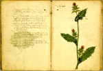

Herbarium. (Onvolledig.) Latijn, Duits en Boheems. Handschrift op papier, 87 ff., 290 x 210 mm. Vermoedelijk Zuid-Duitsland, circa 1460-1470(?), met toevoegingen van latere hand. -- (BPL 3103)
De nieuwe opvattingen van de vijftiende eeuw zijn in de afbeeldingen van dit herbarium al duidelijk doorgedrongen. Van een slaafs kopiëren naar een papieren voorbeeld is geen sprake meer. Vermoedelijk werkte de anonieme tekenaar direct naar de natuur. De afgebeelde planten behoren alle tot de Europese flora en zijn zonder uitzondering in Zuid-Duitsland en Bohemen inheems. Ze zijn steeds op de rechterpagina uitgevoerd. De namen van de planten, in boekschrift, zijn gegeven in de landstaal, meestal in het Duits, soms ook in het Boheems; de toen gangbare Latijnse benaming is er soms nog bij vermeld. De aantekeningen in cursief schrift hebben vrijwel alleen betrekking op de geneeskrachtige werking van de plant. Inhoud en uiterlijke kenmerken wijzen erop dat het boek voor persoonlijk gebruik van een arts of apotheker gediend heeft.
Het werk is in zijn opzet geslaagd. Vorm en kleur van de planten zijn goed getroffen, zoals kan blijken uit de voorliggende pagina, folio 69r (gefolieerd 105r), met een afbeelding van de ‘Vehdisteln’ (Mariadistel of Silybum marianum (L.) Gaertn.).
Literatuur
- W.J. Lütjeharms en S.J. van Ooststroom, ‘Über eine botanische Handschrift aus dem 15. Jahrhundert’, in: Blumea, 2 (1936), p. 75-85.
| vorige pagina | top pagina |